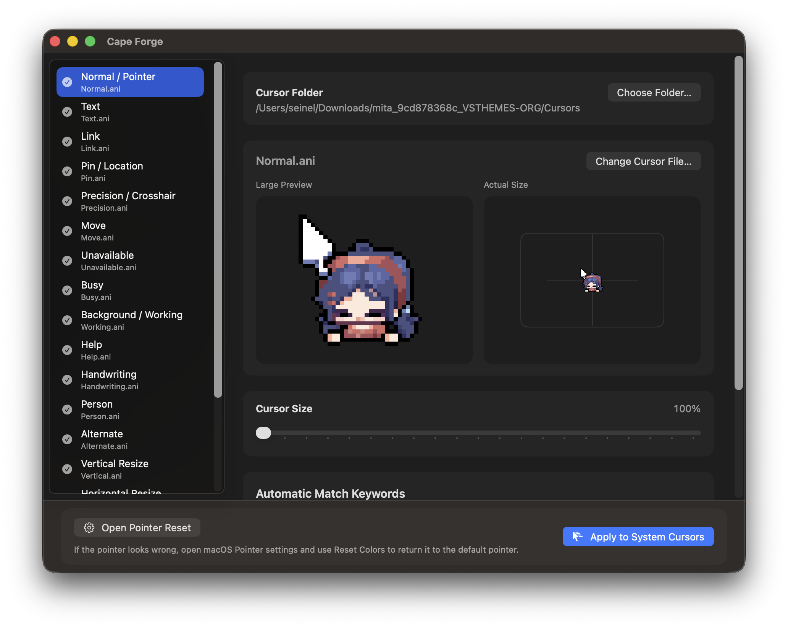

.cur, .ani Windows 커서팩을 불러와 역할을 미리보고, macOS 시스템 커서에 직접 적용합니다. App Store 없이, 샌드박스 없이.

Features
적용 전에 실제 크기와 확대 미리보기로 모든 커서를 확인할 수 있어요.
macOS 시스템 커서에 바로 적용. 버튼 하나로 기본값 복구.
폴더나 파일을 앱에 바로 드래그. 개별 역할을 처음부터 다시 시작하지 않고 바꿀 수 있어요.
Sparkle 업데이터 내장. 새 버전이 나오면 앱 안에서 바로 업데이트됩니다.
How it works
.cur 또는 .ani 파일이 있는 커서팩 폴더를 선택합니다.
역할이 자동으로 매핑됩니다. 원하는 역할은 직접 교체할 수 있어요.
시스템 커서에 적용을 누르면 즉시 새 테마가 적용됩니다.
무료 다운로드. 계정 불필요.
Cursie 다운로드거인의 어깨 위에서
Cursie는 Mousecape 없이는 존재할 수 없었습니다.
Alex Zielenski가 만든 이 오픈소스 커서 매니저는 macOS에서 .cape 테마를 처음 개척했습니다.
그 작업에 깊은 경의를 표합니다.
Changelog
macOS 시스템 커서 직접 적용, Sparkle 자동 업데이트 추가, 새 앱 아이콘 및 커서 미리보기 개선.
기본 화살표 커서가 왼쪽 위로 치우쳐 보이던 문제 수정.
Mousecape 내보내기 빨간 점 문제 수정. 24프레임 초과 애니메이션 다운샘플링 개선.
Windows 커서팩 불러오기, 역할 미리보기, .cape 내보내기.